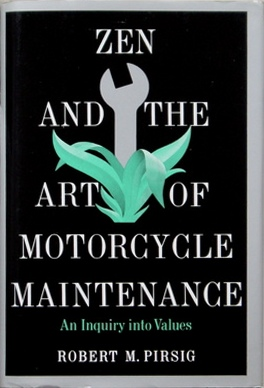
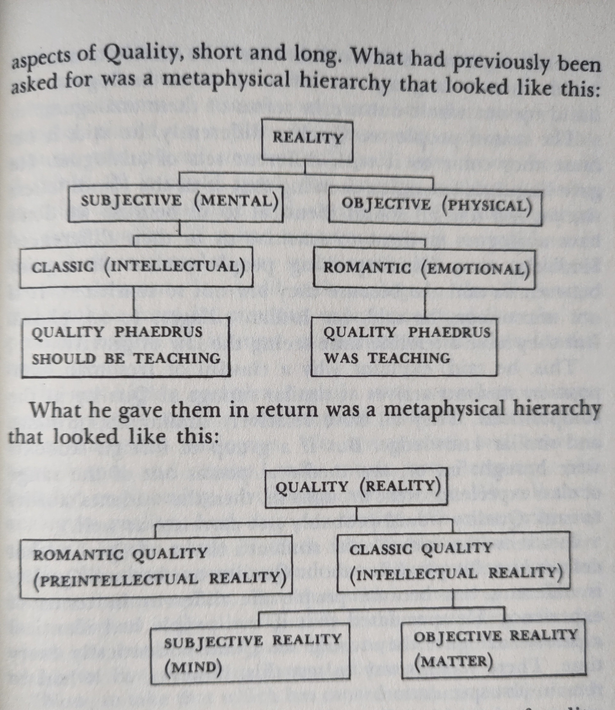

A Summary of Zen and the Art of Motorcycle Maintenance

About the Book and My Summary
Zen and the Art of Motorcycle Maintenance is a book that resonates deeply with my view of the world. I experience a lot of intellectual recognition and feel inspired when reading it. To explore this recognition and inspiration I've re-read the book and written a basic summary in my own words. From the perspective of a professional philosopher, the book is likely lacking in rigor. I look at this article more as an initial exploration than a thorough philosophical evaluation and critique.
For those unfamiliar with the book I recommend reading it first. Zen and the Art of Motorcycle Maintenance is a mix of fiction, autobiography and deep philosophical exploration. The book starts with the nameless Narrator and his young son Chris going on a motorbike trip with their friends John and Silvia. In the first part the Narrator examines the question of classical versus romantic modes of thought and grounds this idea in everyday examples that arise from the motorbike trip.
In part 2 he introduces the ghost of Phaedrus: the psychological remains of his former personality that went insane and was destroyed in electroshock treatment. He gives the reader an introduction into Phaedrus' analysis of rationality.
Part 3 examines the core question: What is Quality?
In part 4 the Narrator searches in depth for the historical origins of the subjective-objective duality in ancient Greece.
It is fair to acknowledge up front that especially part 4 of the book can be harshly criticized. It greatly oversimplifies complex philosophical positions. Most famously: Phaedrus' description of the Sophist as uniformly teaching arete is much too narrow and suits the narrative all too well. Pirsig shortcuts complex philosophical and historical facts and builds caricatures out of nuanced persons and groups (Plato embodying evil and the Sophists embodying the good). I personally think this was a concsious choice by Pirsig to help write accesibly about an incredibly abstract philosophical idea that he thought was of great importance to our society, culture and collective mental health. And so I easily forgive him. For me, the critique is valid, but does not topple the main points of the book.
Intro to the 25th anniversary edition
Looking back, the author acknowledges 2 mistakes in the original text:
Phaedrusdoes not meanWolfbutbrilliantorradiant- Phaedrus is the one who triumphs over the narrator, not the other way around. This was not written clearly in the original text.
Part 1
Chapter 01
The Narrator goes on a motorbike trip with his son Chris and his friends John and Sylvia. They're riding from Minneapolis to the Dakotas. The first part of the journey leads through swampy hot country in the Central Plains.
The Narrator talks about the experience of traveling by motorbike and choosing small, secondary roads. The true joy of the trip is more to travel than to arrive. They want to make good time, with the emphasis on good rather than time. Secondary roads that connect nowhere to nowhere are prefered. They enjoy the hereness and nowness: not going anywhere. The people that live along country roads are not too busy with the future to be courteous. The narrator wants to be concerned not with the twentieth century question of what is new?, but rather what is best?.
He wants to build up something he calls a chautauqua: a talk to get deeper into a subject.
The Narrator is enthousiastic about proper maintenance of his motorcycle. But his friend John doesn´t want to talk about cycle maintenance because he drives the motorcycle to get away from it all; the system; the inhumane death force that gives rise to technology. John and Sylvia don't want to be mass people and technology seems to push people to be mass people. Another example: they don't fix their dripping faucet and instead choose to live with it and suppress anger towards it.
Chapter 02
They drive from the Central Plaines into the Great Plaines. The Narrator tells the reader how he got into motorcycle maintenance in the first place. He once brought his motorcycle in for repair at a workshop that immediately gave him the impression that it wasn't very good. The mechanics there proceeded to seriously mess up his motorcycle with careless work. The Narrator ended up taking the bike home and fixing the problem himself. This leads to the first questions on Quality. Why did those mechanics butcher the motorcycle so? The Narrator explains that he sees the mechanics as having a spectator attitude as opposed to caring about their work.
At the end of the chapter they drive into Red River Valley
Chapter 03
Driving into a storm, a lighting flash brings back memories of Phaedrus to the Narrator. Phaedrus has been here. To the Narrator, Phaedrus is a ghost. The Narrator tells the travellers his idea that the law of gravity is also a ghost. At first they all laugh. But he explains further that it is ridiculous to assume that the law of gravity existed before Newton. Because if if did, when did it actually begin? Was it always there? Even before the Big Bang? Before matter existed? Just being there in nothingness, applying to nothing?
The problem, the contradiction that scientists are stuck with, is that of mind. Mind has no matter or energy but they can't escape it's predominance over everything they do.
The Narrator confesses he has no new ideas of his own and the original ideas in his mind belong to Phaedrus.
Chapter 04
The Narrator lists his motorcycle packlist. The group have some fun when John plays chickenman in his long underwear. They comment on the vast, beautiful emptiness of the Plains. The Narrator promises Chris they will camp out tonight.
Chapter 05
They approach the High Plains, stop for gas at Hague and try to cross the Missouri between Bismarck and Mobridge but no luck. They cross at Mobridge.
The Narrator notes: John sees things the way they are while the Narrator sees what they mean. It is an explanation of different modes of looking at the world: He calls John and Sylvia's way of looking at immediate surface appearances Romantic understanding and his own view of underlying form and meaning Classical understanding.
The Narrator tells us the story of him trying to shim Johns handlebars with aluminum from a beer can. He thought it would look smart because he has a rational, technical view on reality, but John is horrified because he has an artistic, romantic view of reality and the idea of fixing his beautiful BMW with an old beer can is insulting to him.
They camp out but are so tired many things go wrong. The Narrator dreams of Phaedrus and fears Phaedrus is calling out to Chris.
Chapter 06
The Narrator begins to explore Phaedrus' world and formally introduces Classical and romantic understanding. He demonstrates classical analytics and introduces the classical knife that cuts up reality creatively into any subdivision you need. The Narrator wants to look into the underlying form of the world of underlying form.
Chapter 07
They arrive at Bowman. The Narrator talks more about Phaedrus' knife. He uses the analogy that consciousness of the world is taking a handful of sand from an endless desert and calling that handfull the world. The longer you look at the sand, the less uniform and more diverse it seems. We sort sand into piles bases on grain size, color, etc. This is the knife. Classical understanding is about the piles, romantic understanding about the undivided hand of sand. The views seem irreconcilable. What is necessary is a uniting view: to contemplate the endless landscape from which the handful is taken and the figure in it, sorting sand into piles.
In analysis something is always killed and something is always created: when Twain learned to pilot the Mississippi, the river lost it's beauty. But it is not necessary to judge this cycle of death and life. It just is.
They're now in the country where Phaedrus lived.
Phaedrus pursued the ghost of rationality and this led to his insanity. More and more people now catch glimpses of that ghost in the form of incoherence and meaninglessness.
The Narator explains that he is the new personality of Phaedrus after Phaedrus was forcibly committed to a mental hospital as insane and received electroshock treatment.
They arrive at Miles City, Montana.
Part 2
Chapter 08
They are having a nice morning in Miles City. The Narrator is tuning his motorbike. The plugs are dark, which means the mixture has too much gas and not enough air. There's no immediate reason or answer, so he leaves it for now. The narrator talks about precision instruments when he checks his tappets. The precision instruments and parts of the motorcycle are designed to achieve an idea. John may think Phaedrus works on parts, but he's actually working on ideas.
Phaedrus pursued the ghost of rationality. To understand what Phaedrus was saying it's vital to tie it to down-to-earth examples of this rationality. Otherwise you will get stuck on vague generalities that no one can relate to.
The Narrator has a tappet noise in his engine to fix and the plugs are dirty. He starts to talk about the motorcycle and uses it as an example to talk about hierarchies as organizing principles of thought. Since ancient times, the basic structure for all Western knowledge has been a hierarchy. Hierarchies are everywhere. For example the animal kingdom in biology. A hierarchy is a system. The government and institutions are systems.
People perform meaningless tasks at a factory not because of some evil, but because the system demands it and everybody is too lazy to take on the monumental task of overhauling the system just because it is meaningless. If you revolt against a government or system, or neglect repair on a cycle, you're fighting against effects instead of causes. If you don't take on the underlying rationality itself, that rationality will simply produce another government of the same type.
The Narrator finds the 4th tappet loose and adjust it. He concludes the engine is running rich because of less oxygen at the higher altitudes they're traveling in.
The gang really like the small western town. Everybody just talks to them and everything is authentic.
Chapter 09
They follow the Yellowstone Valley across Montana.
The Narrator continues to pursue the ghost of classical rationality and underlying form, like Phaedrus did. Last chapter was about hierarchies of thought. This chapter is about finding your way through the hierarchies: logic.
Inductive reasoning: from particular experiences to general truths.Deductive reasoning: from general truth to specific conclusion.
Complex problems, beyond the reach of common sense require long chains of back and forth between inductive and deductive reasoning. The correct program for constructing these chains is the scientific method.
An overtaking car almost crashed into them. They stop to calm down from the scare.
Chapter 10
The Narrator is now at the beginning of talking about Phaedrus' break from mainstream rational thought and pursuit of the ghost of rationality. He asks the question:
In the scientific method, where do hypotheses come from?
He quotes Einstein several times. Hypotheses do not come from nature. Nature provides only experimental data. The goal of the scientific method should be to systematically test and eliminate hypotheses until one arrives at Truth. Phaedrus found it incredibly easy to think up new hypotheses. As he went along in research, the number of hypotheses increased. At first he found it funny, but then it terrified him because if hypotheses increase instead of decrease with scientific activity, it undercuts the goal of arriving at truth. A quote by Einstein really shook him because it seems to state truth as a function of time:
Evolution has shown that at any given moment out of all conceivable constructions a single one has always proved itself absolutely superior to the rest.
Phaedrus discovered that the lifetime of scientific truths grows shorter as scientific activity intensifies. This would mean that instead of moving towards eternal scientific truth, science actually moves away from eternal truth.
Phaedrus identified a defect in rationality itself. He sees this defect as the reason for the current social crisis. The current mode of rationality worked well as long as the primary concern of mankind was safety, food and shelter. But in our modern world it is no longer leading us to a better world, but away from it.
They arrive at Laurel.
Chapter 11
They decide to take the high route above the timberline through Yellowstone Park: through Red Lodge. The Narrator remembers Phaedrus used this route all the time to get to the mountains and backpack further up to be alone and think in peace. His thought was highly independent. He felt that established institutions like schools, churches and governments all direct thought for other ends than Truth: they seek the perpetuation of their own functions and try to control individuals in service of these functions.
The narrator tells of the era of Phaedrus' life in which he drifted: served in the army; studied in the East... The drift ended when Phaedrus decided to return to the University and study philosophy.
Is modern society truly an improvement over primitive life? The Narrator says: yes it is. Wars are fought with more clearly stated justification and we are finding ways to respect the environment more. Also, primitive life was no picknick: pain, disease, famine and hard labor just to stay alive.
Reason is the central cause of our ascent from primitiveness to modern society:
To some extent the romantic condemnation of rationality stems from the very effectiveness of rationality in uplifting men from primitive conditions. It's such a powerful, all-dominating agent of civilized man it's all but shut out everything else and now dominates man himself. That's the source of the complaint.
Phaedrus went slowly through the high country of the mind because he was thinking too hard: he was thinking scientifically in a philosophical world.
The narrator discusses Kant's Critique of Pure Reason as an example of the high country of the mind. Kant responded to Hume's conclusions from empiricism. Hume as an empiricist embraces the idea that all knowledge that Humans have has it's origin in the senses, in perception. The first problem then becomes that substance, that which causes our senses to react, is not directly sensed; exists only in our minds and thus does not truly exist or is not true knowledge. The second problem is that causation has no basis in perception and thus does not truly exist (only in our mind). This Nature and nature's laws are creations of our own imagination.
Kant agrees with Hume that all knowledge begins with experience. But he adds that this does not necessarily mean that all knowledge must arise directly out of experience. There are aspects of reality that the senses do not supply directly at the moment the sense data are received. These aspects are called a priori. An example of a priori knowledge is time.
This example is to prepare the mind for a similar move in the high country that Phaedrus later made.
Chapter 12
They're at Cooke City.
The range of human knowledge has made us all specialists and if you want to move between many specializations you'll need to forgo human closeness with people around you.
The narrator talks about DeWeese. They'll be visiting DeWeese and his wife. DeWeese was an abstract painter and Phaedrus respected him because he did not understand him. The enigmatic responses of DeWeese to Phaedrus gave Phaedrus the idea that DeWeese had access to some hidden domain of knowledge.
They visit Yellowstone. Phaedrus despised the park because it is fake compared to the raw nature of the mountains.
Phaedrus lived in India for 10 years and studied Oriental philosophy. It was a desillusionment. He was still an empirical scientist. One thing he became aware of is a difference between Hinduism, Buddhism etc on one hand and christianity, islam and judaism on the other. The Eastern religions don't inspire holy wars so much as the simple religions because their statements about reality are never assumed to be reality itself.
After India, Phaedrus kind of gave up on the pursuit of the ghost of reason and settled down with a practical degree, a family and a job.
Chapter 13
Narrator gives an Introduction of the idea of The Church of Reason. Phaedrus called the teaching college where he worked by this name. The state government squeezed down on the college over political disagreements. The governement was threatening the academic freedom of the college and Phaedrus was corresponding with the accreditation board to get help against the worst violations of accreditation. A student angrily said police would stop the loss of accreditation, which prompted Phaedrus to explain the Church of Reason: how the essence of the Church of Reason was separate from the physical building of the college. Police can protect the brick building of the college, but they can do nothing about the abstract principle that truly constitutes a University because it is independent from the physical school.
The curious thing is how Phaedrus so fanatically defended rationality, even though he no longer had faith in it himself.
Chapter 14
They arrive at DeWeese's house. The Narrator worries a little that DeWeese will expect him to be Phaedrus, while he isn't. But he has become adept at pretending and playing along. He is looking forward to learning more about his former personality from DeWeese.
At DeWeese several people come over to the house for dinner and talks. Narrator comments to DeWeese on how weird the split between art and technology is. Building something technological with love, craftsmanship and dedication is not much different from sculpting.
Well, it isn't just art and technology. It's a kind of a noncoalescence between reason and feeling. What's wrong with technology is that it's not connected in any real way with matters of the spirit and of the heart. And so it does blind, ugly things quite by accident and gets hated for that. People haven't paid much attention to this before because the big concern has been with food, clothing and shelter for everyone and technology has provided these. But now where these are assured, the ugliness is being noticed more and more and people are asking if we must always suffer spiritually and esthetically in order to satisfy material needs.
Reason itself needs to be expanded to deal with technological ugliness. What makes it so hard to see and deal with is that reason must not be expanded naturally outward at it's branches, but at it's root; at it's core. Sometimes knowledge and modes of thinking at a societal level are stuck and the only way forward is to allow yourself to drift laterally until you find a way to expand what you know at the roots. Take for example the idea that the earth is flat en Columbus' discovery of America. Dominant modes of thought were no longer enough to explain what happened. There was nothing in the bible or Aristotle to deal with this new discovery.
Present day reason is now akin to the idea that the earth is flat. It's no longer adequate. But people are afraid to go beyond it because they fear going mad, like the flat earth people of before were afraid of falling off the Earth.
The Narrator wants to take Chris up into the mountains on foot after the Sutherlands leave.
Chapter 15
John and Sylvia leave. Sylvia is clearly worried about the Narrator and Chris remaining there together. The Narrator takes Chris to the college where Phaedrus used to teach. When the Narrator goes inside, Chris panicks and runs out. In one of the classrooms a woman walks in while the Narrator is day dreaming about Phaedrus' time here. She is obviously in awe that he is here, probably a student of Phaedrus. She is utterly shocked to hear he does not teach anymore.
I think this is a pivotal moment in the book where the ghost of Phaedrus catches up with the Narrator. While in the college, he writes:
In this place he is the reality and I am the ghost.
It feels like the moment where Phaedrus manifests himself again in his old body that was inhabited by the Narrator.
The Narrator remembers his seed crystal moment about Quality. His colleague Sarah used to walk by him while he was thinking or preparing in his office and ask him "I hope you are teaching Quality to your students". This is the point in the novel where the critique of rationality pivots to consider the question:
What is Quality?
Phaedrus is teaching rethoric at this time and preparing his lecture notes. He is depressed about the state of his lectures and the subject he has to teach. The course requires him to teach his students principles of writing good essays, but he get's more and more convinced that good writing is not done by methodically applying principles. In Phaedrus' view on the matter, writers simply write good by applying their full attention and talent and some innate Quality to their essays. The so called principles are cheap parlor tricks that are tagged on afterwards by people trying to rationalize what makes good writing. So he is required to have the students read some essay, discuss some little principles of good writing and have them mimick it. This is hugely dissapointing to Phaedrus because it mostly has a negative effect on the Quality of the essays the students write.
After Sarah get's excited that Phaedrus confirms he is teaching quality, he get's irritated with her questions and examines his irritation. He discovers after 7 hours of straight thinking that he has absolutely no idea what Quality is. The next day he assigns his students the task to write an essay on what Quality is in thought and statement.
So the mysterious thing about Quality is that it obviously exists. Some things are better than others. In scientific education, the grade system is based on the idea of Quality. But now go back to Phaedrus's dissapointment with teaching rethoric. It seems that any analysis of what Quality is makes the Quality disappear.
Part 3
Chapter 16
Narrator and Chris go on a hike up the mountains. Clearly climbing the mountain is used as a metafor and mood setter for the intellectual climbing we will do with the Narrator. The intellectual climb will be about Phaedrus' exploration of the meaning of Quality. The Narrator distinguishes 2 phases in Phaedrus' quest:
- Intuitively exploring without rigid, systematic definition. A happy phase.
- Working out an enormous structure of thought to explain rationally what he was talking about in terms of Quality. He got in this phase so deep that he lost everything: money, property, family. All to achieve a new route over the spiritual mountain. Then the electroshock therapy robbed him of the memory of that route.
The first, happy phase consisted mainly of innovation in his methods for teaching rhetoric. He helped students who got stuck by focussing on smaller subjects (writing about the front of the University building instead of the whole USA; writing about the back of your thumb). This forced students into creativity instead of emulating and copying because the subject becomes so narrow, it is obvious that no prior material can be used for emulation. Then he experimented with witholding grades during the semester.
Although results of the experiment are interesting, Phaedrus gets stuck on the contradiction that he wanted his students to look inside themselves for what is good and bad, but if they could look inside themselves for this, why were they attending class? It was Phaedrus' job to teach them what is good and what is bad. He saw no true option to give students a goal to work towards without going back to authoritarian teaching. This broke him up into a depression. He was ready to give up and resign.
Chapter 17
Chris goes too fast in the mountains and gets tired and sits down. The Narrator tells the story of the moose that almost ran over his sleeping wife and Phaedrus faced him with a small gun. Just before the moose reached Phaedrus, he stopped, looked at his sleeping wife, smiled and walked away.
When Phaedrus asks his students what Quality is, they are outraged. Phaedrus calmly explains that he actually wants to hear their views and is genuinely interested in their thoughts. Before this quiets them down and opens them up, a colleague walks into the class to see what the ruckus is about. Phaedrus explains with this fantastic answer:
It's allright. We just accidentally stumbled over a genuine question, and the shock is hard to recover from.
Phaedrus writes on the blackboard that Quality cannot be defined, but that everybody knows what it is. He demonstrates this by letting students rate papers on Quality: showing they almost always agree. When they grew bored with his demonstrations, the class turned their attention back to truly learning about Quality. So the exercise about Quality turned into a good introduction to teaching rhetoric. Now the students were genuinely interested. This frees Phaedrus from teaching students to imitate the old rules of rhetoric and in the process killing their creativity. The exercise with Quality forces the students to tap their own creativity and write by their own standards of Quality.
Phaedrus knew his position on Quality was irrational because he refused to define it. More capable minds than his students would easily logically refute his whole exercise. The point is that it worked as a tool of teaching. Over time Phaedrus began to grow restless again when he wondered why it worked. This was the beginning of his phase of crystallization.
Chapter 18
Phaedrus hated esthetics because he recoiled at the idea that the intellectual process of philosophy was forcing Quality into servitude, prostituting it. By keeping Quality undefined, Phaedrus placed it outside the reach of rationality and thus wiped out the entire field of esthetics.
The Narrator goes through reasoning for Phaedrus to defend Quality's existence while refusing to define it: a first defense is found in realism: a world without the concept of Quality could not function in the way the world we see functions. Phaedrus began to describe the world while subtracting Quality. Many things that do exist, like sports competitions, would disappear. Interestingly, rational intellectual pursuits could function more or less unchanged without Quality.
This world without Quality brings him to the concept of squareness.
Absence of Quality is the essence of squareness.
Phaedrus discovers that Quality is a cleavage term:
You take your analytic knife, put the point directly on the term Quality and just tap, not hard, gently, and the whole world splits, cleaves, right in two - hip and square, classic and romantic, technological and humanistic, and the split is clean.
Phaedrus defines squareness as the inability to see Quality before it has been intellectually defined. So he turned the attack on his thoughts around: Quality, kept undefined, is in a good state. It does not need to be analyzed further. It is squareness and thus analysis itself that must be analyzed.
So Quality is the cleavage term that splits hip from square. The narrator contemplates that such a cleavage term may be able to heal and unite a world already split along those lines, especially in terms of what he calls "The System".
A real understanding of Quality doesn't just serve the System, or even beat it or even escape it. A real understanding of Quality captures the System, tames it, and puts it to work for one's own personal use, while leaving one completely free to fulfill his inner destiny.
Chris has a hard time hiking up the mountain. He wants to go too fast and becomes tired and grumpy. When they set up camp he turns around and the atmosphere between narrator and Chris lightens up again.
Chapter 19
Sleeping on the mountain, the Narrator had a dream where he was in a white painted room looking though a glass door at his wife, Chris and his other son. Chris was waving at him, but his wife was crying. He sees Chris is not truly smiling but is actually afraid. He walks towards the door and Chris's smile becomes more real. Chris wants him to open the door, but right when he is about to, he instead turns around and walks away.
After they wake up, Chris tells narrator that he talked to him all night about the mountain. Narrator cannot remember this. Apparently he told Chris he would meet him at the top of the mountain.
In the Chautauqua, it's time for the second wave of Phaedrus's crystallization: the metaphysical one. Faculty staff asked Phaedrus to explain if his Quality was objective or subjective: does it reside in matter, or in the mind? After a long train of thought, Phaedrus establishes Quality not as in the object or in the subject, but as a third entity among them. So the world is composed of three things: mind, matter and Quality. He then explores the relationship between the three.
He comes to conclude that Quality is an event: Quality is the event where subject and object collide. As such, it is the cause of subject and object. Afterwards subject and object are mistakenly assumed to be the cause of Quality.
Chapter 20
Narrator considers why he would tell Chris in his sleep: "I'll meet you at the top of the mountain". Chris seems conviced Narrator was awake. As they approach the top of the mountain Narrator feels uneasy and wants to go down. Phaedrus was never afraid; Narrator is. He says that's why he's alive and Phaedrus is not. He doesn't want to meet Phaedrus at the top of the mountain. He also doesn't want to go further up Phaedrus' mental mountain, but rather take the time to solidify what he has unearthed up until now. Chris is dissapointed they are going down.
You go up the mountaintop and all you're gonna get is a great big heavy stone tablet handed to you with a bunch of rules on it. That's what happened to him. Thought he was a goddamned Messiah.
Narrator wants to ground out the second wave of crystallization, the metaphysical one, in everyday reality. Phaedrus did not ground it and went into a third, mystical wave of crystallization that drove him mad. Narrator will explain the direction Phaedrus went in before leaving that path.
In speculation about the relationship of Quality to mind and matter, Phaedrus had identified Quality as the parent of both mind and matter, the cause of them. He did not mean this in a mysterious way.
...at the cutting edge of time, before an object can be distinguished, there must be a kind of nonintellectual awareness, which he called awareness of Quality. You can't be aware that you've seen a tree until after you've seen the tree, and between the instant of vision and instant of awareness there must be a time lag. We sometimes think of that time lag as unimportant, But there's no justification for thinking that the time lag is unimportant - none whatsoever.
The past exists only in our memories, the future only in our plans. The present is our only reality. The tree that you are aware of intellectually, because of that small time lag, is always in the past and therefore always unreal.
For Phaedrus, this solved the problem of answering the question if Quality resided in the object or the subject. It also solved the classic-romantic plit: there was one Quality, with two temporal aspects: romantic Quality involves the immediate impressions, classic Quality involves Quality over time, such as proper preparation, building solid foundations and doing maintenance work.
Phaedrus' Copernican revolution in metaphysics in response to his colleagues' question if Quality resides in object or subject looked like this:

This metaphysical model allows for a clear explanation of the reason Quality cannot be defined. Philosophy, reason and analysis are human analogues to describe the world after it has been processed by our senses and interpreted by our mind.
Quality is the continuing stimulus which our environment puts upon us to create the world in which we live.
So the sickness in an analytical explanation and definition of Quality is that it tries to include the cause of what our minds experience into a description by those minds of that experience.
At this point Phaedrus descended into the third, mystical wave. He saw he had drifted away from a metaphysical trinity into an absolute monism where Quality was simply everything. He realized the overlap with Hegel's Absolute Mind and began to read the Tao Te Ching. He saw how it fit completely with his idea of Quality. Quality is exactly the same as Lao Tzu's Tao:
The great central generating force of all religions, Oriental and Occidental, past and present, all knowledge, everything.
And then his mind blew up, exploded in a crescendo of ever expanding consciousness while he had nothing left to stand on.
It all gave way from under him
Chapter 21
The Narrator and Chris descend the mountain. Chris is dissappointed they did not go to the summit.
The Narrator wants to get away from intellectual abstractions and reach solid, practical, grounded topics. He tells us Phaedrus actually did little for Quality. It is reason and rationality that most benefit from the path he has established. Of the trinity of Art, Religion and Science, it is Science that needs most to be expanded. It has always been described as value-free. But the Narrator feels this is a root cause under the ugliness people are seeing in Science's offspring: technology. Value-free is also Quality-free. This will have to go.
Chris and the Narrator arrive back in Bozeman and spend the night at an hotel.
Chapter 22
The Narrator and Chris say goodbye to the DeWeezes and head north.
The Narrator talks about Jules Henri Poincaré. This philosopher followed a path up the mountain from the opposite direction Phaedrus was climbing. They both stop at the same top of the mountain, so their respective paths form two halves of a total road. As the Narrator says:
Phaedrus follows a long and tortuous path into the highest abstractions, seems about to come down and then stops. Poincaré starts with the most basic scientific verities, works up to the same abstractions and then stops. Both trails stop right at each other's end!
Poincaré lived and wrote during a time of crisis in the scientific community. The crisis arose when violations of Euclid's fifth theorem by Lobachevsky and Riemann produced alternative geometries with no logical inconsistencies. There were now multiple, incompatible geometries and no way to choose which one was true. Science was at risk of becoming a matter of faith or convention.
Poincaré began a chain of reasoning with the intent of saving science. He arrived at the same problem that failed Phaedrus out of University: for a given hypothesis, infinite other hypotheses can be imagined that explain the same observations. So the scientist has to make choices. Poincaré described a reasonable system for scientists to base their choices on.
He then examined his own experience of arriving at facts (discovering them). His famous Theta-Fuchsian series of equations appeared in his mind after a wave of crystallization that followed drinking black coffee and being unable to sleep. This leeds him to hypothesize that true discoveries are made by selecting facts among an infinity of useless ones by what he called the subliminal self. His description of this self corresponds perfectly with Phaedrus' preintellectual awareness.
The subliminal self, Poincaré said, looks at a large number of solutions to a problem, but only the interesting ones break into the domain of consciousness.
The subliminal self selects on the basis of classical beauty, which it recognizes by an underlying harmony. This harmony was not accepted by contemporaries of Poincaré because they saw it as subjective and "whatever you like". Phaedrus' Quality as a third metaphysical entity is needed to show this harmony is not subjective, but pre-intellectual.
Chapter 23
The narrator has a dream again like in chapter 19. He realizes the room he is in is actually a huge sarcophagus and he is dead. The door is the lid and Chris and his mom are paying their respects. The Narrator wants to talk to them but a dark figure by the door motions him not to: the dead are not allowed to speak. The Narrator shouts anyway for Chris to meet him at the bottom of the ocean. Chris has heard it. The dark figure becomes enraged and suddenly the Narrator is standing in the endless ruins of a deserted city and he must walk them alone.
Chapter 24
The Narrator and Chris wake up and have a lovely, refreshing morning. The Narrator wants to go back to talking about caring. He started talking about it early in the book but realized he first had to dive into Quality. He recaps the intellectual journey he has discussed up until now:
Caring -> Classical - Romantic split -> The meaning of Quality -> Metaphysics -> Formal reason
Now the Narrator is travelling back along this line. With a firm understanding of Quality he is ready to tie it down to concrete everyday life and his favorite example: maintenance and fixing of an old motorcycle.
Chris wants to write a letter to his mom, but get's stuck starting the writing. The Narratow smiles because this is exactly what he excelled in when helping his students. He proceeds to help Chris think about smaller steps, so he can begin to write.
Stuckness is what the Narrator wants to talk about in this chapter. He sets up the example of being stuck working on a motorcycle, because a screw of a side cover plate is stuck and won't come loose. In this situation the scientific method is useless because you already know what the problem is. You need a hypothesis for a solution. But the scientific method does not provide a method for uncovering new hypotheses.
The Narrator calls this kind of stuckness the zero moment of consciousness. It can be an emotionally difficult point to be at. Fear and anger can take over.
What you're up against is the great unknown, the void of all Western thought. You need some ideas, some hypotheses. Traditional scientific method, unfortunately, has never quite gotten around to say exactly where to pick up more of these hypotheses.
Traditional scientific method has always been at the very best, 20-20 hindsight. It's good for seeing where you've been. It's good for testing the truth of what you think you know, but it can't tell you where you ought to go, unless where you ought to go is a continuation of where you where going in the past. Creativity, originality, inventiveness, intuition, imagination - "unstuckness," in other words - are completely outside it's domain.
The problem of the scientific method with stuckness, is that the scientific method demands that you look objectively at the problem. This objectivity is good to keep human error and bias in check once a hypothesis has been formed that can be tested scientifically. It does nothing whatsoever to further the endeavor of creatively thinking up new hypotheses. The Narrator harkens back to his talk about Poincaré here. Simply objectively observing the motorcycle here does not help because there are a nearly infinite number of things to observe. Some creative preselection of facts must happen.
This is where care and caring come in. A good mechanic subliminally selects the right facts to observe because he cares. The traditional subject - object dualism, that leaves Quality out, leaves no room to for caring.
When this duality is completely accepted a certain nondivided relationship between the mechanic and motorcycle, a craftsmanlife feeling for the work, is destroyed.
It is this absence of Care that makes technogy seem like a death force in the eyes of many.
The Narrator establishes the model of a train of knowledge: Classic Knowledge is all the parts of the long train that can be looked at individually and examined as parts of the train. Romantic knowledge is the leading edge of the train. You only see it once the train is moving. Analyzing the parts of the train (classical knowledge) require that you stop the train. But the train of knowledge is always going somewhere on a track called Quality. Romantic knowledge is the cutting edge of experience; the here and now moment where reality comes into existence.
Traditional knowledge is only the collective memory of where that leading edge has been.
Considered from this perspective, stuckness is a good place to be. It automatically sets you on a path to get unstuck; a path to the front of the train. The only thing keeping you stuck is running backwards through the cars of the train. This is why self-taught engineers are so much more flexible than formally trained engineers: they have built their skill by getting stuck over and over again and creatively finding solutions. Formally trained engineers on the other hand have learned about every known situation. When they get stuck on an unknown problem, their learned knowledge won't save them.
Chapter 25
Last chapter discussed stuckness, the aversion to which rises from traditional reason. This chapter, the Narrator wants to talk about it's romantic counterpart: the ugliness of technology.
The ugliness the Sutherlands see in technology, does not stem from technology itself. Art and technology both involve making things. The ugliness romantically inclined people see in technology rises from our habit of assigning quality to objects and subjects. The ugliness is not in objects (technology) nor in subjects (the people that produce technology). The true origin of the ugliness is in the relationship between the people that produce the technology and the technology itself. A proper, craftsmanship relationship to the technology is the result of a feeling of identity with the craft and the technology. It is essential not to separate yourself from the work. You must do the work right unselfconsciously. One must see technology as a fusion of nature with the human spirit. Seeing technology as an exploitation of nature leads to low Quality.
To arrive at true Quality you must apply both classic and romantic understanding of Quality. But if you look for instructions how to do something in the modern world, you will always only find classical information.
The resulting modern technogy is very dull. To fix this we try to overlay it with a shallow layer of style. But this makes it worse: it is obvious that the thin veneer of style is fake and cheap.
The reason for our current situation of an overdose of classical reason is historical. To make our current technological prowess possible of was necessary to suppress, reject and subjugate the irrational world of prehistoric man.
It's been been necessary since before the time of Socrates to reject the passions, the emotions, in order to free the rational mind for an understanding of nature's order which was as yet unknown.
The Narrator posits that the time has come to reintegrate the passions we fled from, because they are central to the human experience. He talks about peace of mind as essential when doing technogical work.
...peace of mind is is a prerequisite for a perception of that Quality which is beyond romantic Quality and classic Quality and which unites the two, and which must accompany the work as it proceeds. The way to see what looks good and understand the reasons it looks good, and to be one with this goodness as the work proceeds, is to cultivate an inner quietness, a peace of mind so that goodness can shine through.
Peace of mind produces right values, right values produce right thoughts. Right thoughts produce right actions and right actions produce work which will be a material reflection for others to see of the serenity at the center of it all.
Chapter 26
The Narrator talks about gumption. Gumption happens when someone connects with Quality: they get filled up with gumption. A person filled with gumption is at the front of the train, enthusiastically meeting whatever comes up the track.
To fill up with gumption you need to be quiet and at peace long enough to see, hear and feel the real universe. The narrator gives the example of fishing as an activity that fills one with gumption. Working on technogy when you're filled with gumption is essential to creating high quality work. Gumption is the term that can make all the abstract talk about Quality concrete.
During technical work, many negative experiences that happen that drain gumption and destroy enthusiasm. The Narrator calls these gumption traps. This chapter will be devoted to discussing various gumption traps and in the process tying down Quality to concrete, day to day work. There are 2 main types of gumption traps:
- Setbacks: gumption traps that have their origin in external circumstances
- Hang-ups: gumption traps that have their origin in you
Setback (external gumption traps)
The narrator gives examples of external causes that can destroy your gumption and enthusiasm and gives suggestions how to deal with them. I'm going to shortly mention them here without deep detail.
- Out-of-sequence-reassembly setback
You make a mistake in reassembling the cycle, leaving something out. You have to take it apart and do it all over again.
- To prevent:
- Keep notes about dissassembly
- Have space to lay out parts in the order they have to be reassembled.
- To deal with:
- Take a break and do gumption filling:
- Coffee
- Going for a walk
- Take a nap or go to sleep
- Take a break and do gumption filling:
- To prevent:
- Intermittent failure setback
The problems appears only intermittently, making it hard to diagnose and work on
- Don't assume you've fixed a problem too quickly. Give it time.
- Do your own maintenance. It will be less frustrating than driving it to the shop many times and you learn something from continuously working on it.
- Write down correlating events from when the fault pops up.
- Parts setback
You end up with wrong or damaged parts. Or parts are wildly expensive
- Spend time finding a trustworthy parts shop and build a relationship with the parts man.
- Look around for price cutters
- Take the old part with you to the shop to prevent errors
- Learn to machine your own parts
Hangups (internal gumption traps)
Hangups can be further divided into:
- Value traps - blocking of effective understanding
- Truth traps - blocking of cognitive understanding
- Muscle traps - blocking of psychomotor behavior
Value traps
Most value traps rise from value rigidity:
...an inability to revalue what one sees because of commitment to previous values.
The narrator gives the example of the South Indian Monkey Trap: people put a coconut filled with rice on a chain outside. There's a hole in the coconut big enough for the monkey to put his hand in, bit too small to take his closed fist out. The monkey cannot escape because it suffers from value rigidity: it fails to reassess the value of a fist full of rice in the face of imminent capture by humans.
Other examples of value traps are too much ego (thinking too.highly of yourself), too much anxiety, boredom and impatience.
Truth traps
Truth traps are about data contained in the boxcars of the train. You can properly handle this data with classic rationality and the scientific method. The thing that can go wrong here is that classic rationality does not recognize the concept.of mu. Mu means that the context of the question is too small for the context of the answer and a yes or no answer would be inappropriate. Instead, the context of the question must be reexamined and expanded.
When the outcome of an experiment is mu, it cannot confirm or disconfirm the hypothesis but it prompts for further exploration and understanding of the variables involved and the context and scope of the experiment. As such, mu results are often more interesting than yes or no results, but tend to be viewed as a failure of the experiment.
Psychomotor traps
Under psychomotor traps, the Narrator counts inadequate tools, bad surroundings (inadequate light, uncomfortable position while working) and insensitivity to the finesse of handling vulnerable materials.
Gumption for Quality
A concrete way to work towards Quality in technogy, or other activities with a heavy classical rational background, is to work on yourself and the relationship between you and the technology and work by actively spotting and dealing with gumption traps and by doing so maximize the gumption and care when you work.
Part 4
Chapter 27
The Narrator has the dream again where he sees Chris through a glass door and a shadowy figure forbids him to go through. But in this dream, the shadowy figure is afraid. The Narrator jumps the figure and grabs him by the throat to drag him into the light.
Then he wakes up because Chris is anxiously calling him awake because he shouted in his sleep that he was going to kill someone. He explains the dream to Chris.
It turns out the shadowy figure was the Narrator himself. He realizes he is not the dreamer anymore... Phaedrus is the dreamer
It's Phaedrus. He's waking up
Chapter 28
The Narrator recalls a memory from Phaedrus where he is in the car with Chris going to shop for bunkbeds and he cannot find his way home, having already started to decompensate. The Narrator is afraid that as Phaedrus is waking up inside his mind he will go insane again, mainly fearing for Chris. He decides that later on he should put Chris on a bus home, sell the motorcycle and check himself into a mental hospital.
He decides to take the Chautauqua in the direction of completing Phaedrus' story.
Phaedrus began to note that a lot of paths in thought about Quality lead to ancient Greece. He feels the origin of the confusion about Quality began in ancient Greece. Phaedrus decides to pursue a Phd degree to continue university teaching. In his search to present a Phd thesis on Quality, he stumbles across an interdisciplinary program in "Analysis of Ideas and Study of Methods" at the University of Chicago. Phaedrus is admitted to the program by the acting chairman and then seeks a scholarship from the Chairman who was absent during his admittence. The Chairman first dismissses Phaedrus because he finds his field of English Composition a methodological field as opposed to a substantive field. Phaedrus studies the statements, work and description of the committee and the Chairman to find an opening and get past the dismissal on methodological grounds. He finds substance and method to be alternative words for objects and subjects. As he sees Quality as outside of both subjects and objects he realizes this will mean a quarrel with the committee.
It turns out the committee is the last vestige of an attempt to challenge the idea that an empirical scientific education is automatically a good education. The leaders of this revolt were thus concerned with Quality and travelled along a similar path as did Phaedrus. But somehow they had ended with Aristotle and stopped there. A fundamental tenet of the clash that preceded the period in which Phaedrus found the committee was that Western thought had advanced relatively little since Aristotle and Aquinas. The members of the committee lost this clash as others were unwilling to grant the final authority to define values to the thought of Aristotle. The committee in it's current form is what was left after they lost this struggle.
Phaedrus realizes that to present his thesis on Quality he must challenge the committee's preoccupation with Aristotle on the subject of values. He is gloomy about his prospects and pens a grandiose and provocative letter to the Chairman. Although the Chairman tries to deny him admittance at first, he is later admitted through a rather legalistic manoevre. He moves his family to Chicago and enrolls in a rhetoric class. He studied incredibly hard and read the ancient Greek classics for this class. Though from the start he is incredibly hostile towards Aristolellian thought because of the damage he feels it has inflicted upon man.
To understand Phaedrus' hatred and dismissal of ancient Greek thought, it is necessary to understand the mythos over logos argument. Basically, this argument states that the logos, our rational, logical understanding of the world, arises out of the mythos, the ancient myths and legends of our society, such as the Greek myths, the Veda's and the old testament. The idea is that the mythos shapes the logos and the logos as such is not independent from its mythological roots. The narrator draws a parallel between the mythos and Quality and his train of knowledge analogy: mythos is the whole of the train, traveling on the track of Quality. He realizes that Phaedrus knew that to go outside the mythos is the definition of insanity. And yet he also knew, to truly study Quality, he must go outside the train, reject the mythos and go insane. The narrator refuses to believe he can be insane while he enjoys the beauty of the world so much, or that to pursue something so pure as Quality can mean insanity. He realizes it is the mythos that is insane.
The mythos that says the forms of this world are real but the Quality of this world is unreal, that is insane! And in Aristotle and the ancient Greeks he believed he had found the villains who had so shaped the mythos as to cause us to accept this insanity as reality.
Chapter 29
The Narrator and Chris are nearing the coast, going through the coastal redwood forest, from Oregon into California. The Narrator notices time and time again how lonely the people here look.
It's paradoxical that where people are most closely crowded, in the big cities in the East and West, the loneliness is the greatest.
The media have convinced them that what's right around them is unimportant. And that's why they're lonely. You see it in their faces. First the little flicker of searching, and then when they look at you, you're just kind of an object. You don't count. You're not what they're looking for. You're not on TV.
It's easy to blame technology for this loneliness, but the real evil is the dualistic object-subject mindset underpinning modern technology. Working on technology (fixing a motorcycle for example) with Quality can in fact destroy the evil. The Narrator believes that this is how improvement to the World must happen: Individuals making Quality decisions and nothing else. What's needed is a rebuilding of the national reserve of gumption.
Phaedrus, as opposed to the Narrator, felt that to heal the world, one must start with a new philosophy. Reason must no longer be value-free. It must be made subordinate to Quality. This is why Phaedrus wanted to study the ancient Greeks:
...the ancient Greeks, whose mythos had endowed our culture with the tendency underlying all the evil of our technology, the tendency to do what is "reasonable" even when it isn't any good.
And so Phaedrus dives deeply into Aristotle. He is horrified to read how Aristotle cuts up the art of rhetoric with his analytical knife into a huge and boring hierarchical system, naming all the parts and their relations just like the Narrator subdivided and named the parts and their relations of his motorcycle. Aristotle, however, is not talking about a motorcycle, but about rhetoric! Phaedrus hated Aristotle with a passion because he sees him as a template for all bad teachers: those that mindlessly push the boring little details of their classification systems on students as if it were the most important thing to learn, killing the students' creativity and selfesteem as they go.
Phaedrus attends sessions on Aristotle with the Professor of Philosophy. The Professor is a horrible teacher that is harsh and denigrating to his students. They are expected to memorize the details of Aristotle's thought and disregard their own thoughts and creativity. A student asks a critical question on Aristotle and receives severe humiliation as an answer:
"Sir, we are not here to learn what you think!" hissed the Professor of Philosophy. Like acid. "We are here to learn what Aristotle thinks!"
Because of Phaedrus' maniacal letter to the committee, the Professor is aware that Phaedrus is in essence a hostile student. Luckily for Phaedrus, this other student asked a critical question first and receives the rebuke and humiliation originally intended to silence Phaedrus. Because Phaedrus has studied hard, knows the reading material by heart and has now witnessed how questions critical of Aristotle will be dealt with, the Professor has lost his initial chance to humiliate Phaedrus and force him out of the class. Phaedrus remains silent in class and studies well. The Professor on the other hand appears to grow fearful of Phaedrus. Phaedrus notices the Professor is most restless about the subject of dialectic: logical argumentation with a technique of crossexamination, like Socrates uses in Plato's dialogues. Plato held dialectic to be the sole method of arriving at truth. Aristotle champions the scientific method and has an interest to demote the importance of dialectic.
The course Phaedrus attends is switching to Plato. Phaedrus is shocked to realize Plato sees rhetoric as almost pure evil. The class is assigned the dialogue of Gorgias. Gorgias is a Sophist and Socrates (Plato) questions him dialectically about the art of rhetoric. Phaedrus is enraged to see Socrates wielding dialectic as an analytical knife to hack up and destroy the art of rhetoric.
In class, the Professor of philosophy is trying for a dialectic hold on Phaedrus by asking him his personal opinion about cooking. The Professor wants to position Phaedrus as a rhetorician whose rhetoric is thrown by the force of the dialectic. Phaedrus becomes silent while his mind races through all the options and paths the discussion can go. He cannot find a way to escape the dialectic hold and remains catatonic. The Professor is embarrassed by the long silence, quickly finishes the lecture and leaves in a hurry.
Phaedrus, meanwhile, clearly begins to see the true evil of dialectic, even entrenched in Phaedrus himself: an evil that:
...pretends to try and understand love and beauty and truth and wisdom but whose real purpose is always to usurp them and enthrone itself. Dialectic - the usurper.
This conclusion leads Phaedrus to study Plato deeper, paying special attention to Plato's condemnation of the Sophists. He begins to read into pre-Socratic Greek thought to find a reason for this condemnation. What he discovers is shocking.
Plato's hatred of the rhetoricians was part of a much larger struggle in which the reality of the Good, represented by the Sophists, and the reality of the True, represented by the dialecticians, were engaged in a huge struggle for the future mind of man. Truth won, the Good lost, and that is why today we have so little difficulty accepting the reality of truth and so much difficulty accepting the reality of Quality...
According to the Narrator it is important to understand the reason for Socrates, Plato and Aristotle to take position with truth and against Quality in this struggle. Something happened during the lives of Socrates and Plato that was unique in the history of mankind. For the first time in our history, a group of people managed to see the mythos, the legends and myths passed down by ancient humans ...
... not as revealed truth but as imaginative creations of art.
Being freed of the old mythos enables the Greek philosophers to begin thinking about more abstract immortal principles. This is a line of thought that will eventually lead Western thought to the establishment of the Laws of Nature. And these Laws and their accompanying methods in turn enable the immense scientific and technogical progress and success our modern society is built on. The immortal principle of the ancient Greeks is the concept of...
...Truth. Knowledge. That which is independent of what anyone thinks about it.
The Sophists and the wisdom (rhetoric) that they teach, the idea that man is the measure of all things and truth is relative, is an existential threat to the fragile new concept of independent Truth. This is why Plato hates the Sophists and Aristotle places rhetoric in such a minor category of his huge hierarchy of all things so that it can never be used to examine or reason about Truth at the top of the hierarchy.
Phaedrus realizes that, inspite of the incredible importance of rational scientific thought, what he is saying about Quality aligns much more closely with the position of the Sophists. One thing sounds strange to Phaedrus: the Sophists claims that they are teaching virtue. This clashes with the idea of homo mensura: man is the measure of all things.
A person whose idea of what is proper varies from day to day can be admired for his broadmindedness, but not for his virtue.
After further analysis of Sophist thought, Phaedrus concludes that virtue is not the correct translation of what the Sophists professed to teach with their rhetoric. The ancient Greek word they used was aretê. The correct translation of aretê is: Excellence. It implies a sense of duty. Not duty towards others, but duty towards the Self. This broad, unspecialized, universal excellence whas what the Sophists taught through the medium of rhetoric. The Narrator quotes H. D. F. Kitto to further explain aretê:
Thus the hero of the Odyssey is a great fighter, a wily schemer, a ready speaker, a man of stout heart and broad wisdom who knows that he must endure without too much complaining what the gods send; and he can both build and sail a boat, drive a furrow as straight as anyone, beat a young braggart at throwing the discus, challenge the Pheacian youth at boxing, wrestling or running; flay, skin, cut up and cook an ox, and be moved to tears by a song. He is in fact an excellent all-rounder; he has surpassing aretê. Aretê implies a respect for the wholeness or oneness of life, and a consequent dislike of specialization. It implies a contempt for efficiency - or rather a much higher idea of efficiency, an efficiency which exists not in one department of life, but in life itself.
And so Phaedrus perceives how our civilization sacrificed it's understanding of being a part of the world (and not an enemy of it) to gain the power and control of science to manipulate nature into the forms we desire.
Phaedrus wonders why Plato would want to destroy aretê until he realizes Plato did not destroy aretê, he encapsulated it in a system in which dialectical truth usurped the top position. Plato made aretê:
the highest form, the highest Idea of all. It was subordinate only to Truth itself...
To win the battle for the establishment of Reason and Truth, Plato had to reconcile two competing factions of dialecticians: those who hold that Immortal Truth is change (followers of Heraclitus) and those who posit that it is changeless being. Plato united these positions when he stated that they coexist as changeless Ideas and Appearance, which changes. This is why Plato found himself forced to separate the unchanging Idea of 'horseness' from the appearance of an actual horse. Plato tried to incorporate the Sophists' aretê in the same way, making it the highest Idea of all. But once the Good was established as an Idea, as opposed to Reality itself, later philosophers were free to demote the Good to lower categories as they saw fit.
This is what Aristotle did when he finally gave birth to modern scientific thought as we know it. Aristotle says the horse is not mere changing appearance. It's changing appearance clings to something that is real, of this world and unchanging. He named this thing Substance and gave science the very thing it is based on. Aristotle becomes obsessed with forms and substance and demotes the Good to ever more minor categories.
And so, when Humanity gave birth to Science and Truth, it was forced to give up it's innate understanding of the Good. And suddenly questions could be asked such as: "what is the Good?", " how do we define the Good?". Before Aristotle it would have been absurd to ask these questions, because the Good was above definitions and dialectic.
Chapter 30
At the next session of the philosophy class, the Professor is I'll and he remains absent for a long time. In the professor's absence the dialogue of Phaedrus is assigned. Then the Chairman of the Committee takes over the class. The student that was verbally abused and left class earlier is suddenly back and smiling conspicuously at Phaedrus. This makes him realize the Chairman probably explained to that innocent student that he received the blows meant for Phaedrus and can return while the Professor sets up the class to humiliate and remove Phaedrus.
Phaedrus has studied the dialogue so thoroughly that it is basically memorized. After asking students some questions about the dialogue, the Chairman concludes they have not studied well enough to explain the material and he will therefore explain it himself. The dialogue is essentially about the immortal soul, the One, and Socrates describes the One using an analogy of a truth seeker on a carriage that is drawn by two horses: a white horse, noble and temperate; and a black horse: stubborn and passionate.
The chairman reaches the point where he should explain that the white horse is an analogy for temperate reason and the black horse for the passions; emotion. But instead of explaining the analogy, he backs up and states again that Socrates has sworn on his own immortal soul that he is speaking the Truth:
TRAP! He's using the dialogue to prove the holiness of reason!
Phaedrus then raises his hand and flatly states:
All this is just an analogy.
And with that, the self confidence and whole persona of the Chairman is broken.
Silence. And then confusion appears on the Chairman's face. "What?" he says. The spell of his performance is broken. "This entire description of the chariot and horses is just an analogy." "What?" he says again, then loudly, "It is the truth! Socrates has sworn to the Gods that it is the truth!" Phaedrus replies, "Socrates himself says it is an analogy." "If you will read the dialogue you will find that Socrates specifically states it is the Truth!" "Yes, but prior to that . . . in, I believe, two paragraphs . . . he has stated that it is an analogy."
This completely demolishes the whole dialectical position. The Chairman is speechless and the class begins to turn on him. A girl tries to save the Chairman by asking him easy questions. When the question is asked "What is dialectic?", the Chairman asks Phaedrus to answer. And with his answer Phaedrus drives the final nail in the Chairman's philosophical coffin:
" As best I know, Aristotle's opinion is that dialectic comes before everything else . . . And from the dialectic come the forms, and from . . . " But the Chairman cuts him off.
Once it is stated that "the dialectic comes before anything else," this statement itself becomes a dialectical entity, subject to dialectical question. Phaedrus would have asked, What evidence do we have that the dialectical question-and-answer method of arriving at truth comes before anything else? We have none whatsoever. And when the statement is isolated and itself subject to scrutiny it becomes patently ridiculous. Here is this dialectic, like Newton's law of gravity, just sitting by itself in the middle of nowhere, giving birth to the universe, hey? It's asinine.
Dialectic, which is the parent if logic, came itself from rhetoric. Rhetoric is in turn the child of the myths and poetry of ancient Greece. That is so historically, and that is so by any application of common sense. The poetry and the myths are the response of a prehistoric people to the universe around them made on the basis of Quality. It is Quality, not dialectic, which is the generator of everything we know.
And with that, Phaedrus leaves the University of Chicago forever. And here follows finally his famous quote:
The Church of Reason, like all institutions of the System, is based not upon individual strength but upon individual weakness. What's really demanded in the Church of Reason is not ability, but inability. Then you are considered teachable. A truly able person is always a threat.
And then, having arrived at the very core and ancient origin of our current struggle with Quality and the System, Phaedrus begins to decompensate. He breaks under the strain of teaching and just sits through classes without saying a word. He no longer sleeps. Everywhere around him he sees the fakeness of the modern System intrude upon him. He becomes catatonic. Only sitting on the floor, letting his urine flow freely, letting cigarettes burn into his fingers. And so he is forcibly admitted to a mental hospital and the personality of Phaedrus is erased from his mind by electroshock therapy.
In the here and now of the Narrator, his relationship with Chris begins to turn worse and worse. It slowly becomes apparent that Chris is aware that the Narrator is not Phaedrus; is not truly the father he used to have. The Narrator realizes Chris misses Phaedrus.
Chapter 31
The relationship between the Narrator and Chris quickly deteriorates. It is clear to the Narrator that Chris subconsciously feels that he is not the father he used to be.
Flash of fear. That's what he wanted. He wants to hate me. Because I'm not him.
What I am is a heretic who's recanted, and thereby in everyone's eyes saved his soul. Everyone's eyes but one, who knows deep down inside that all he has saved is his skin.
Chris is obstinate and throws tantrums. He hates being on the motorbike trip and says they're not really going anywhere or doing anything fun. The Narrator tells Chris he is thinking about putting Chris on a bus home because there's no point in being on a vacation he hates. Then the Narrator explains this is not Chris' fault and not because he's angry with Chris.
... you're looking at a father who was insane for long time, and is close to it again.
I'm sending you home not because I'm angry with you but because I'm afraid of what can happen if I continue to take responsibility for you.
As Chris realizes he might lose his father again, the person standing up for him and pulling him through the troubles he has in his life, he collapses on the road next to the motorcycle. The Narrator hears the sound of a truck in the distance. Chris is in the middle of the road and he is not moving. He is not listening. The Narrator panicks and doesn't know what to do. He wishes he could run to the cliff and just jump off.
And then it happens.
Phaedrus awakes!!
"Everything is all right now, Chris." That's not my voice. "I haven't forgotten you." Chris's rocking stops "How could I forget you?" Chris raises his head and looks at me. A film he has always looked through at me disappears for a moment and then returns. "We'll be together now." The wine of the truck is upon us. "Now get up!
Just in time, Chris get's up.
"Were you ever really insane?" "No!"